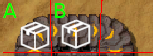
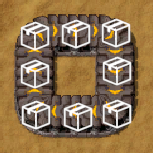

Factorio is a factory-building game involving lots (and I mean, LOTS) of conveyor belts. The code that implements these belts is marvel of optimization, but unfortunately they can't handle every construct.
The issue occurs when belts are arranged in a loop. At first, items placed on the belt appear to work normally, circulating around like the luggage return at an airport. But as soon as the belt reaches full capacity, it stops.
I don't have access to Factorio's source code, but I reckon I can give a good explanation of why this happens. Imagine a simplified version of Factorio in which belts are single-lane and can hold only one item per tile:
To update, we'll repeatedly iterate over every item on the belt, looking for items that have an empty tile in front of them. As we find such items, we'll move them forwards on the belt and continue our iteration.
Before: After:If the tile in front of an item isn't empty, we can't move the item there yet but it may be possible to move the item at a different iteration. For example, item "A" below can't move until item "B" has moved, and this may take several iterations.
There are different orders one can iterate - some more efficient than others - but for the sake of correctness, all that matters is eventually reaching a fixed point. The algorithm stops when no items can be moved anymore.
Lastly, it's important that when an item moves, it won't move again until the algorithm completes. Otherwise, items will teleport all over the place at inconsistent speeds. We'll have to tag each item that moves and exclude it from future iterations.
Before: After:
Here's the pseudocode:
do
set MADE_PROGRESS to false
for each item, I
if I has not already moved
let B be the belt under I
let B' be the belt B outputs to
if B' has no item
move I from B to B'
mark I as moved
set MADE_PROGRESS to true
while MADE_PROGRESS is trueAnd here's the algorithm running to completion, visualized:
For an item to move under this algorithm, it must have a free space to move onto. But when the items are packed tightly into a circle, there is no free space and so the whole belt jams up.
Yikes!
The algorithm above tries to prove which items can move, pessimistically assuming that any item it can't prove, won't move. But what if we do the opposite? Consider an algorithm that optimistically assumes all items move, then proves which items can't.
So how do we do this? Well, if an item is at the end of a belt, it's safe to say that item can't move. Below, we'll mark such items with a red "X" to show they can't move.
Before: After:Likewise, if an item is blocked by another immobile item, it can't move either. Once we mark a red "X", the item before it can be marked as well.
Before: After:This new algorithm also runs until it reaches a fixed point. Then, all items without a red "X" can be moved forwards.
If you try this algorithm out on a circular belt, you'll notice it completes without marking a single "X"! But this is correct: all items in the belt will move around it, as none were proven to be immobile.
Before giving the pseudocode, there's something that needs to be addressed. What happens when two or three belt merge together, as in the case below?
As defined, the second algorithm will move both items onto the merged belt at once because it can't prove either to be immobile. A bug! The correct behavior, as handled by the first algorithm, is to only move one or the other; not both.
We can fix the second algorithm by defining a priority for each merging belt. A lower priority belt tile will be deemed immobile if a higher priority belt has an item on it. Below, belt "A" is the higher priority one, and belt "B" is the lower priority one. "A" is occupied, so "B" must be immobile.
Before: After:For a game like Factorio, these priorities could be switched every frame to evenly zipper the contents of both belts into one.
The code below follows three steps.
for each belt intersection, S
set BLOCKED to false
for each input belt to S, B
if BLOCKED is true
mark B as immobile
if B has an item
set BLOCKED to true
do
set MADE_PROGRESS to false
for each item, I
let B be the belt under I
let B' be the belt B outputs to
if B' doesn't exist or if B' is immobile
mark B as immobile
set MADE_PROGRESS to true
while MADE_PROGRESS is true
for each item, I
let B be the belt under I
let B' be the belt B outputs to
if B is not immobile
move I from B to B'From a correctness perspective, the second algorithm is superior, but one must admit that it takes more code and is less obvious than the first design. It also complicates the implementation of other components like inserters, factories, and chests, though this may be a non-issue for greenfield projects. I suspect Factorio is far too developed to ever change their belt algorithm, but I'm hopeful newer games will take the second approach at my own suggestion.
It's important to note that the second algorithm only produces a usable result when the algorithm finishes. However, the first algorithm can be run incrementally. Every iteration moves the game state from one valid position to the next, which may be useful at times.
I wrote this article about Factorio, but the technique is more general than that. Flipping around the problem and reversing what you're proving is a really useful skill!
Originally, I learned of this technique from a paper on compiler research: "Combining Analyses, Combining Optimizations," by Cliff Click. Ammusingly, the paper was also using the technique to deal with loops, albeit of the programming variety. Of course, Cliff Click isn't the first person to do this sort of thing. Mathematicians have been enjoying it from quite a ways back.
Yes, I've beat the game twice, and even attempted to make my own clone game. This article was a result of that work.
Yes, I'm aware, and did a deep-dive of Factorio before writing this article. But adding optimizations in to my explanation would totally muddy the clarity and turn this short article into a long one.
You can. The biggest optimization is to combine long straight segments of belts into a single nodes, a la this Factorio blog post. This reduces the size of the belt graph, but hardly changes the algorithms. You might think of it like writing a grid-based pathfinding algoirthm, then adapting it to be mesh-based.
Sure, but that only works for the most trivial cases. The belt graph can be quite complicated, with loops comprising several segments. For cases like that you'd have to do cycle detection, which is totally not better than the 2nd algorithm.
As stated earlier in the article, my explanations were made using single-lane belts that can hold only one item per tile. This kept things simple. If you can implement this, you can implement two-lane belts that hold many items with little difficulty.
A splitter on the line make sushi-belts run much better - and usually work - but they aren't a panacea. You can still jam them up, they're just far less likely to.
Perhaps. I'm not a Factorio dev, and don't have access to the Factorio code, so this article is just speculation on my part. But it's still a nice way to show off a cool technique.